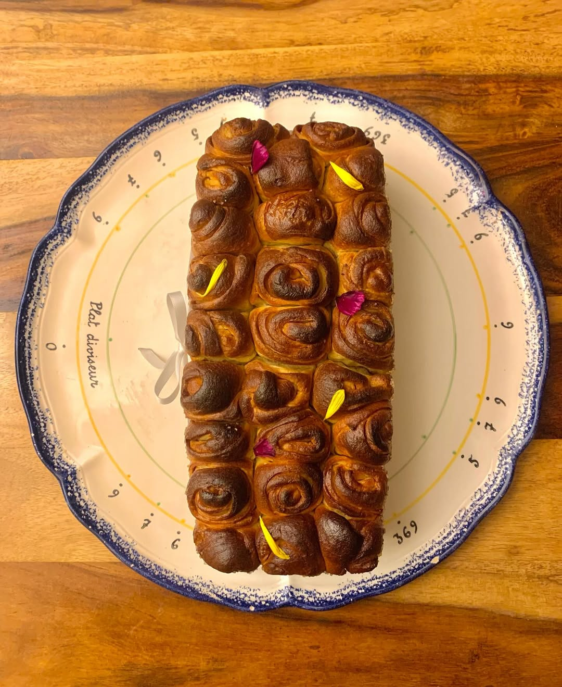
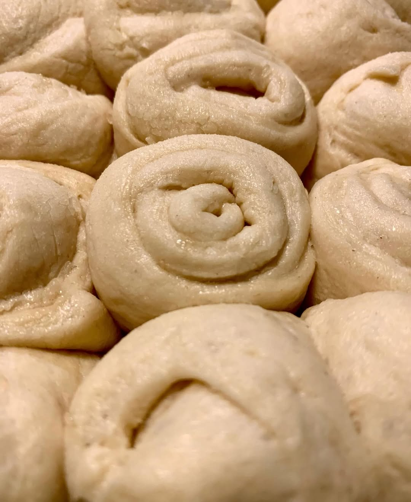
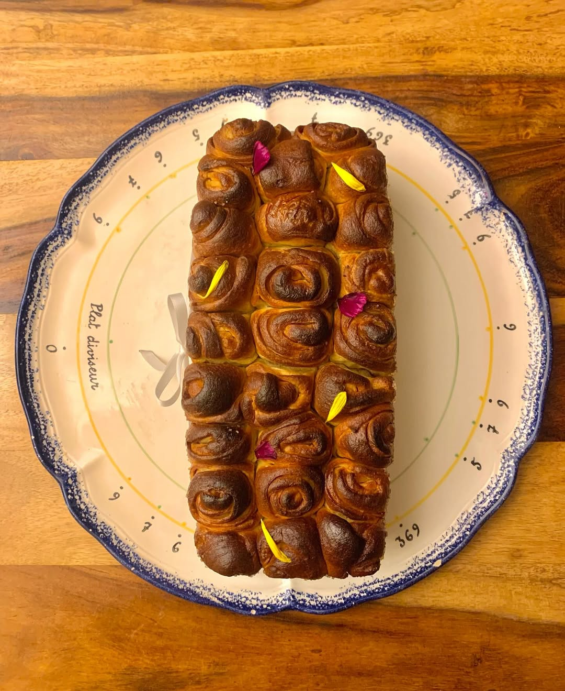
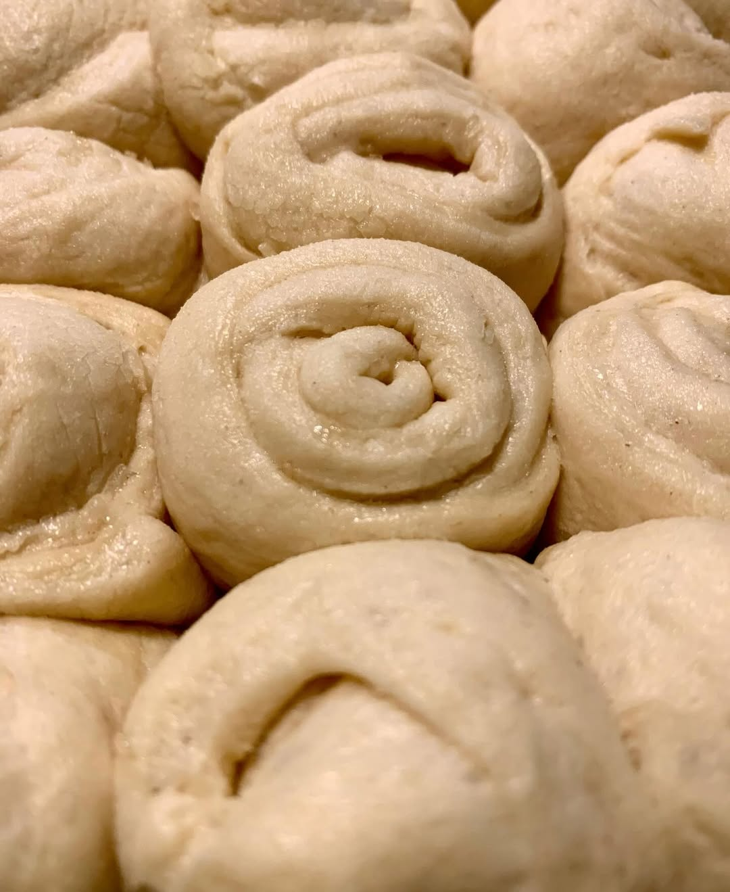

L'Art de la Brioche
Une signature visuelle unique, entre sculpture et gourmandise.
Le Partage
Généreuse et conviviale, elle se rompt à la main pour le plaisir de tous.
Matière Brute
Beurre AOP, sucre perlé craquant et une mie filante comme un nuage.
Le Cadeau
Format individuel, ruban de satin. L'élégance du détail.
Dégustation
Sublimée par des fleurs comestibles, prête à être servie.